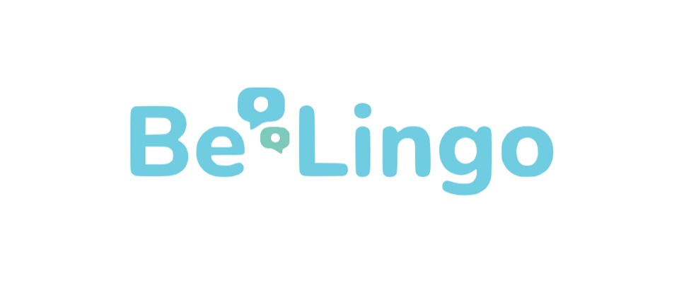

BeLingo
English fluency, built in conversation.

Overview
Most language learning stalls in the same place.
A student can read English, pass a written test, and still freeze in a live conversation. BeLingo works on that gap directly. Its central program is the English conversation club, where students practice spoken English with other people instead of studying alone.
The clubs are not treated as a finished product. Part of Sai’s work is innovating the conversation clubs themselves to improve student fluency, which means the format is the thing being built, tested, and improved.
[[TODO: one approved sentence from Sai describing exactly what BeLingo offers, and to whom]]
Scope
Two titles, one job.
- 01Leading academic partnerships
- 02Coordinating with U.S. partners
- 03B2B marketing
- 04Management accounting
- 05Innovating English conversation clubs to improve student fluency
The CFO half keeps the numbers honest. The international and public relations half keeps the venture connected. In a venture this young, those are the same work approached from opposite ends.
The conversation club
Fluency is a performance skill. It improves fastest under the conditions it will actually be used in.
-
Format
Students speak in real time with another person who is listening. That is the whole premise.
[[TODO: online, in person, or both]]
-
Session
[[TODO: length, frequency, group size]]
-
Level
[[TODO: minimum English level to join]]
-
Measurement
[[TODO: how fluency improvement is measured]]
Partnerships
Sai leads BeLingo’s academic partnerships and coordinates with the venture’s partners in the United States. This is the bridge role: academic institutions on one side, U.S. counterparts on the other, and a program that has to run consistently between them across borders and time zones.
It is also the reason the title reads international. Partnerships of this kind are built one relationship at a time.
On the commercial side, Sai handles B2B marketing and management accounting. B2B marketing means the pitch is aimed at institutions rather than individual students. Management accounting means the internal numbers, the ones used to decide what the venture does next.
[[TODO: current academic partner institutions]] [[TODO: U.S. partners and their contribution]] [[TODO: student regions]] [[TODO: funding model]]
“Embracing the impossible and pushing the limits is my natural response to any challenge or business endeavor.”
— Sai Brazier
Other ventures
If you run a school, a language program, or a department that wants its students speaking English rather than only studying it, Sai is the person to talk to.